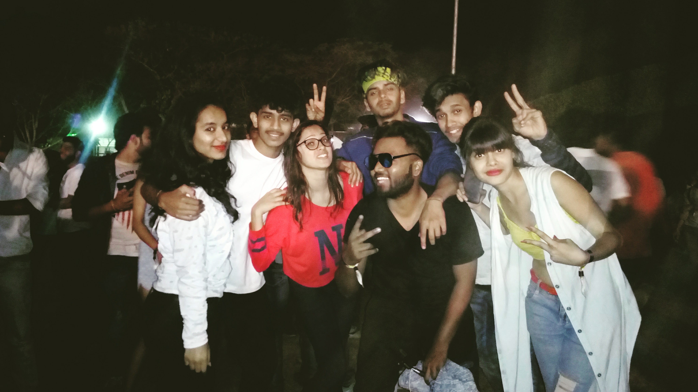

Group dances are danced by groups of people simultaneously, as opposed to individuals dancing alone or individually
and as opposed to couples dancing together but independently of others dancing at the same time, if any.
Start from Down
The dances are generally, but not always, coordinated or standardized in such a way that all the individuals in the group are dancing the same steps at the same time. Alternatively, various groups within the larger group may be dancing different, but complementary, parts of the larger dance. An exception to this generalization must be vxpointed out where groups of individuals are dancing independently of each other, but with the purpose of creating a "group" feeling or experience, such as might accompany various forms of ritual dancing.
Group dances include the following dance forms or styles
